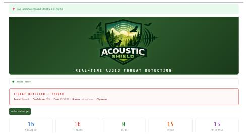

01Acoustic Shield +
Bio-Acoustic AI / Jan — May 2026

01Acoustic Shield +
Bio-Acoustic AI / Jan — May 2026
AI-powered bio-acoustic monitoring for wildlife conservation. It detects potential threats—gunshots, chainsaws, vehicle engines, and human disturbances—from environmental audio and turns them into real-time alerts.
- Audio preprocessing, spectrogram generation & CNN sound classification
- Separates threat signals from natural forest soundscapes
- Scalable, cost-conscious prototype for continuous monitoring
05 / Find me elsewhere
A few more
corners of me.